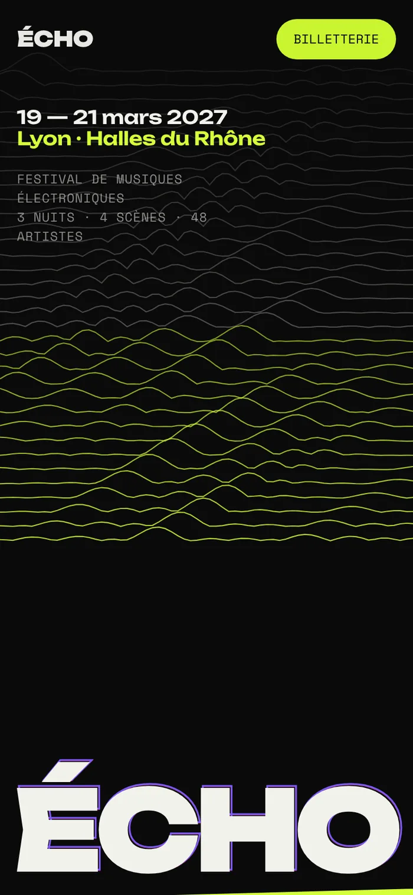
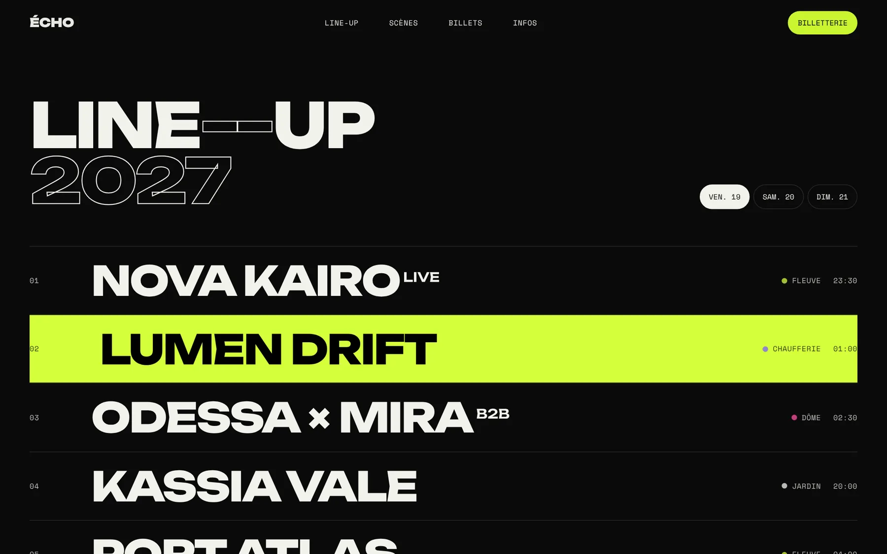
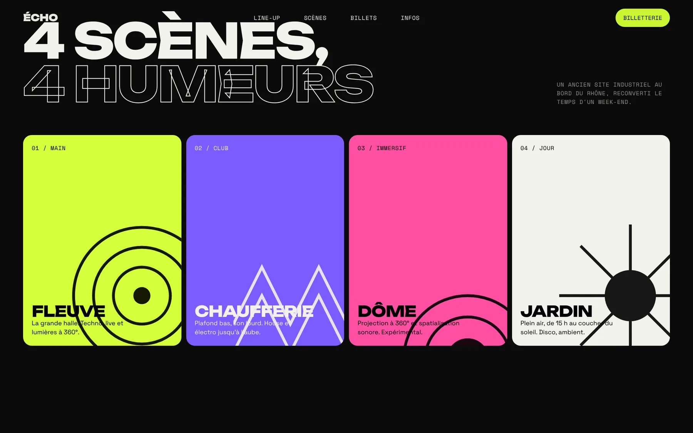
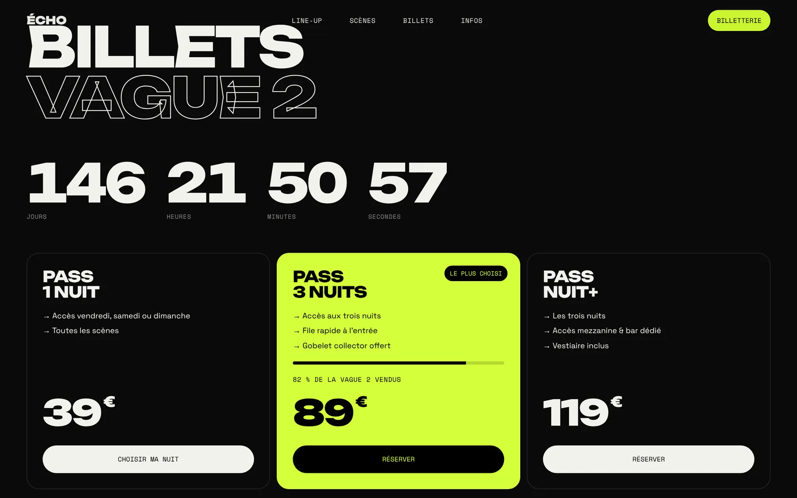
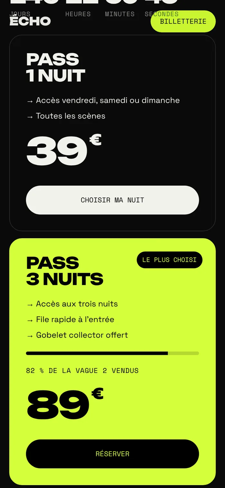

Concept personnel — 2026
Un festival de musiques électroniques imaginé à Lyon. L'objectif : que le site fasse déjà entendre la musique, avant même le premier son.
- Type
- Événementiel
- Année
- 2026
- Rôle
- Direction artistique, UI, creative coding
- Outils
- Canvas 2D, JavaScript, CSS
- Statut
- Concept — festival fictif
- Prototype
- Voir en ligne ↗


✦Concept personnel : ÉCHO, ses artistes et son lieu sont fictifs. Le projet explore l'identité visuelle et le code créatif pour l'événementiel.
Un site qui vibre.
Un festival se vend sur une émotion. Le site devait être aussi fort qu'un drop : typographie ultra-large, couleurs acides, contrastes violents.
Le nom donne la règle graphique : chaque titre est suivi de ses « échos », des contours décalés violet et rose qui ondulent doucement, comme une réverbération.
Nuit, acide & néon.
Un noir total pour la nuit, un vert acide pour l'énergie, le violet et le rose pour les scènes. Une typographie très large et très grasse pour les titres, une grotesque et une mono pour les infos pratiques.
LINE—UP 2027
Unbounded
19 — 21 mars · Halles du Rhône
Space Grotesk
Un paysage sonore.
L'accueil n'utilise aucune vidéo : 54 lignes dessinées en canvas, déformées par du bruit de Perlin. Plus le curseur s'approche, plus l'onde s'élève — le visiteur « joue » avec le paysage.
Le rendu s'arrête dès que la section sort de l'écran, et s'adapte à la densité de pixels : fluide sur mobile, sans vider la batterie.

Line-up — survol acide

Quatre scènes, quatre humeurs



Créer l'envie.
Line-up par jour
Trois onglets, un survol qui remplit la ligne en vert acide : on parcourt la programmation comme un set.
Compte à rebours
Jours, heures, minutes, secondes jusqu'à l'ouverture des portes, mis à jour en direct.
Jauge de vente
« 82 % de la vague 2 vendus » : un signal d'urgence clair, sans pop-up agressive.
Scènes en cartes
Quatre ambiances, quatre couleurs, quatre pictogrammes géométriques dessinés en SVG.
Monolithe

✦ Un projet en tête ?